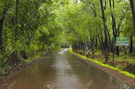
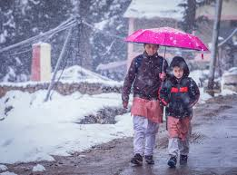
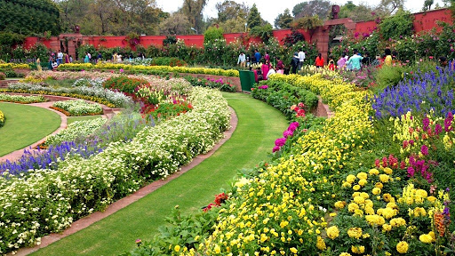

Summer

During the three months from April to June it is summer in most parts of India.Generally in the month of April, many parts of India experiences high temperature.
Rainy
The rainy season in India begins generally from the second week of July and continues up to the second week of October. From the second week of June humid monsoon enters various parts of India and causes rainfall everywhere in the state.
Winter
During the period from December to February there is winter season in India. During this time clouds and dry North-East Monsoon passes over different regions of India and temperature is decreased considerably. In Himalayan area the temperature is much lower (between 5°C and 10°C).
Spring
The advent of spring brings us the pleasant sound wind begins to blow. It refreshes our body and mind. The countryside appears to be adorned with green leaves and flowers. Birds sing and bees hum in the flower garden. Trees and creepers are covered with beautiful flowers. Bees hum all day long among them.